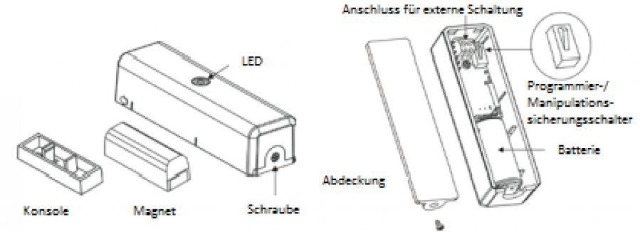
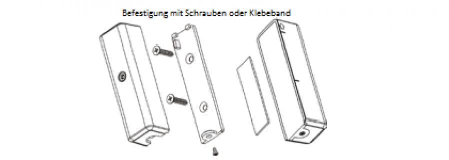

VIS_ZD2102
Firmware Version : 4.84 |
 |
KurzinfoS Dieses Gerät ist ein Z-Wave-Sensor. Drücken Sie zum Inkludieren oder Exkludieren des Gerätes den Manipulationssicherungsschalter hinter der Batterieabdeckung. Das Öffnen der Abdeckung weckt das Gerät auf und hält es im Wachzustand. Weitergehende Informationen finden sich in den jeweiligen Abschnitten dieses Handbuches. |
Produktbeschreibung
Dieser Sensor liefert Informationen, ob ein Fenster oder eine Tür offen oder geschlossen ist. Das Gerät besteht aus einem Magneten, der an dem beweglichen Teil des Fensters oder der Tür angebracht ist sowie dem Hauptgerät, das auf den feststehenden Teil montiert werden kann. Die Montage erfolgt mit Schrauben oder mit doppelseitigem Klebeband. Der ZD2102 ist ein batteriebetriebenes Gerät. Die Batterien können gewechselt werden, ohne dass die Befestigung des Gerätes gelöst werden muss. Das Gerät verfügt zusätzlich über eine Manipulationssicherung, die bei unbefugter Entfernung des Gerätes einen Alarm an den Controller sendet. Der Tür/ Fenstersensor ZD2102 kann über Z-Wave den Sensorzustand an einen Controller melden oder andere Z-Wave Geräte direkt in Abhängigkeit vom Sensorzustand steuern. Die zu steuernden Geräte müssen dazu mit dem Sensor assoziiert werden. Bis zu vier Z-Wave Geräte können mit dem ZD2102 assoziiert werden.
Installationsanleitung
1. Lösen Sie die Schraube an der Abdeckung und schieben Sie die Abdeckung nach unten.
2. Legen Sie die CR123A Batterie in die Batteriefassung. Die LED wird beginnen langsam zu leuchten. Dies bedeutet, dass das Gerät noch nicht in das Z-Wave Netzwerk inkludiert ist.

3. Für die Montage des Sensors befestigen Sie die Abdeckung mittels der Schrauben oder doppelseitigem Klebeband am zu öffnenden Teil des Fensters oder der Tür.

Verhalten des Gerätes im Z-Wave Netz
I Im Auslieferungszustand ist das Gerät mit keinem Z-Wave-Netz verbunden. Damit es mit anderen Z-Wave Geräten kommunizieren kann, muss es in ein bestehendes Z-Wave Netz eingebunden werden. Dieser Prozess wird bei Z-Wave Inklusion genannt. Geräte können Netzwerke auch wieder verlassen. Dieser Prozess heißt bei Z-Wave Exklusion. Beide Prozesse werden von einem Controller gestartet, der dazu in einen Inklusion- bzw. Exklusion-Modus geschaltet werden muss. Das Handbuch des Controllers enthält Informationen, wie er in diese Modi zu schalten ist. Erst wenn der Controller des Z-Wave Netzes im Inclusion-Modus ist, können Geräte hinzugefügt werden. Das Verlassen des Netzes durch Exklusion führt zum Rücksetzen dieses Gerätes in den Auslieferungszustand.
Setzen Sie den Controller in den Inklusions-/ Exklusion-Modus. Durch Drücken des Manipulationssicherungsschalters für eine Sekunde bestätigen Sie die Inklusion and Exklusion des Gerätes.
Bedienung des Gerätes
Immer, wenn das Fenster oder die Tür, an der der Sensr installiert ist, geöffnet oder geschlossen wird, sender der Sensor ein entsprechendes Funksignal aus.
Kommunikation mit einem batteriebetriebenen Gerät
W Das Gerät ist batteriegespeist und damit in der Regel in einem Tiefschlafmodus um Strom zu sparen. Im Tiefschlafmodus kann das Gerät keine Funksignale empfangen. Daher wird ein (statischer) Controller benötigt, der netzgespeist und damit immer funkaktiv ist. Dieser Controller - zum Beispiel ein IP-Gateway - verwaltet eine Nachrichten-Mailbox für dieses batteriegespeiste Gerät, in dem Nachrichten an dieses Gerät zwischengespeichert werden. Ohne einen solchen statischen Controller wird die Nutzung dieses batteriebetriebenen Gerätes sehr schnell zur Entladung der Batterie führen oder die Nutzung ist komplett unmöglich.
Dieses Gerät weckt regelmäßig auf, meldet dies durch Aussenden einer sogenannten Wakeup-Notifikation und leert dann seine Mailbox im statischen Controller. Dafür muss bei der Inclusion die Node-ID des Controllers und ein Aufweckinterval definiert werden. Erfolgt die Inklusion durch einen statischen Controller wie zum Beispiel ein IP-Gateway, wird dieser Controller diese Konfiguration automatisch erledigen und in der Regel eine Nutzerschnittstelle anbieten, um das Aufweckinterval den Nutzerbedürfnissen anzupassen. Das Aufweckinterval ist ein Kompromiss zwischen maximaler Batterielaufzeit und minimaler Reaktionszeit des batteriegespeisten Gerätes.
Das Öffnen der Abdeckung und somit Betätigen des Manipulationssicherungsschalters weckt das Gerät auf und hält es im Wachzustand.
Es ist möglich die Gerätenummer 255 als Zielgerät für die Wakeup-Notifikation anzugeben. In diesem Falle wird die Nachricht als Broadcast an alle Geräte mit direkter Funkverbindung gesendet. Dem Vorteil der sofortigen Benachrichtigung steht als Nachteil gegenüber, das das Gerät gegebenenfalls mehr Zeit im aktiven Modus und damit mehr Batterieladekapazität verbraucht.
Node Information Frame
NIF Der Node Information Frame ist die Visitenkarte eines Z-Wave Gerätes. Es ist ein spezielles Datenpaket, in dem der Gerätetyp sowie die Funktionen des Gerätes bekanntgemacht werden. Inklusion und Exklusion eines Gerätes wird von diesem mit einem Node Information Frame beantwortet. Zusätzlich kann der Node Information Frame für bestimmte Konfigurationsprozesse des Z-Wave Netzes - zum Beispiel das Setzen von Assoziationen - benötigt werden.
Ein Druck auf den Manipulationssicherungsschalter führt zum Senden eines Node Information Frame.
Assoziationen - wie werden andere Geräte gesteuert?
A Z-Wave Geräte können andere Geräte direkt steuern. Diese direkte Steuerung heißt in Z-Wave Assoziation. In den steuernden Geräten muss dazu die Geräte-ID des zu steuernden Gerätes hinterlegt werden. Dies erfolgt in sogenannten Assoziationsgruppen. Eine Assoziationsgruppe ist immer an ein Ereignis im steuernden Gerät gebunden (Tastendruck oder Auslösen eines Sensors). Bei Eintritt dieses Ereignisses wird an alle in einer Assoziationsgruppe hinterlegten Geräte ein Steuerkommando gesendet.
Assoziationsgruppen:
| 1 | BASIC Kommando bei erkannter Öffnung (max. Anzahl Geräte: 5) |
Technische Daten
| Schutzklasse | 20 |
| Batterietyp | 1 * C123A |
| Explorer Frames | Ja |
| SDK | 4.54 |
| Geräteart | Slave with routing capabilities |
| Allgemeiner Z-Wave-Gerätetyp | Binary Sensor |
| Spezieller Z-Wave-Gerätetyp | Routing Binary Sensor |
| Router | Nein |
| FLiRS | Nein |
| Firmware Version | 4.84 |